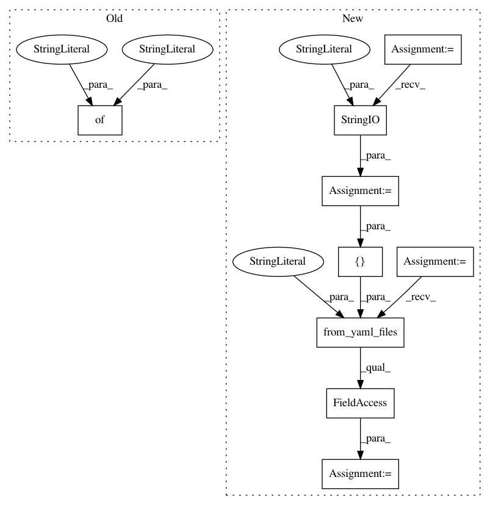

acddae6d90304615b08e364e56de2b40b0324e49,snips_nlu/tests/test_log_reg_intent_classifier.py,TestLogRegIntentClassifier,test_empty_vocabulary_should_fit_and_return_none_intent,#TestLogRegIntentClassifier#Any#,394
Before Change
language = LANGUAGE_EN
dataset = {
"entities": {
"dummy_entity_1": {
"automatically_extensible": True,
"use_synonyms": False,
"data": [
{
"value": "...",
"synonyms": [],
}
],
"matching_strictness": 1.0
}
},
"intents": {
"dummy_intent_1": {
"utterances": [
After Change
// Given
language = LANGUAGE_EN
dataset_stream = io.StringIO(
---
type: intent
name: dummy_intent_1
utterances:
- "[dummy_slot_name:dummy_entity_1](...)"
---
type: entity
name: dummy_entity_1
automatically_extensible: true
use_synonyms: false
matching_strictness: 1.0
values:
- ...
)
dataset = Dataset.from_yaml_files("en", [dataset_stream]).json
text = " "
noise_size = 6
utterances = [text] + [text] * noise_size
utterances = [text_to_utterance(t) for t in utterances]
In pattern: SUPERPATTERN
Frequency: 3
Non-data size: 9
Instances
Project Name: snipsco/snips-nlu
Commit Name: acddae6d90304615b08e364e56de2b40b0324e49
Time: 2019-01-09
Author: clement.doumouro@gmail.com
File Name: snips_nlu/tests/test_log_reg_intent_classifier.py
Class Name: TestLogRegIntentClassifier
Method Name: test_empty_vocabulary_should_fit_and_return_none_intent
Project Name: snipsco/snips-nlu
Commit Name: 8561f49fad2e0b8125cc0e6f329d43b6b78e6b61
Time: 2019-01-02
Author: adrien.ball@snips.ai
File Name: snips_nlu/tests/test_crf_slot_filler.py
Class Name: TestCRFSlotFiller
Method Name: test_should_be_serializable
Project Name: snipsco/snips-nlu
Commit Name: f1acab811b528be85e2838d813fddb2e5865fea7
Time: 2018-12-04
Author: adrien.ball@snips.ai
File Name: snips_nlu/tests/test_deterministic_intent_parser.py
Class Name: TestDeterministicIntentParser
Method Name: test_should_be_serializable